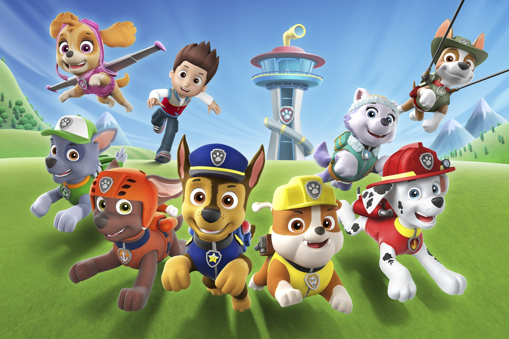
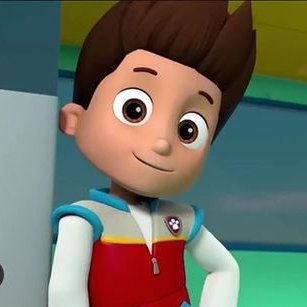
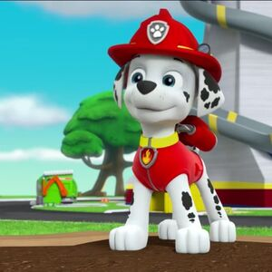
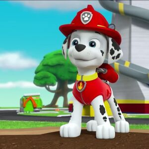
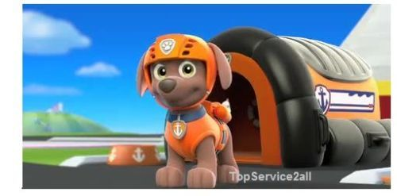
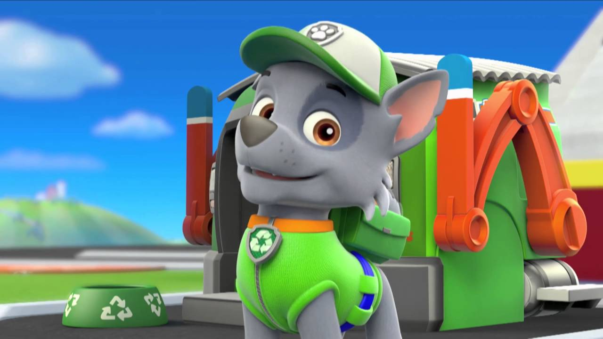
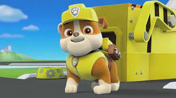
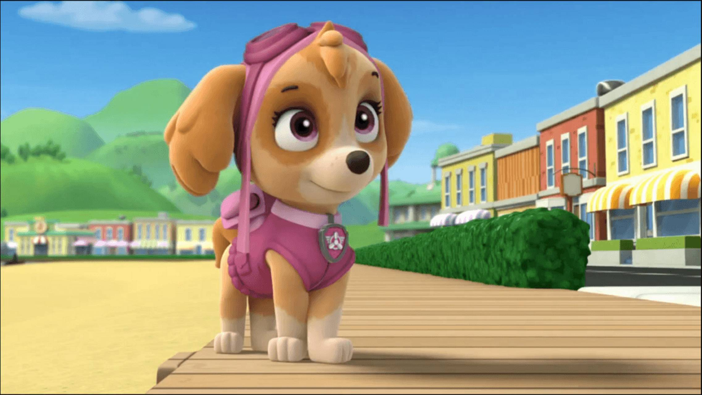
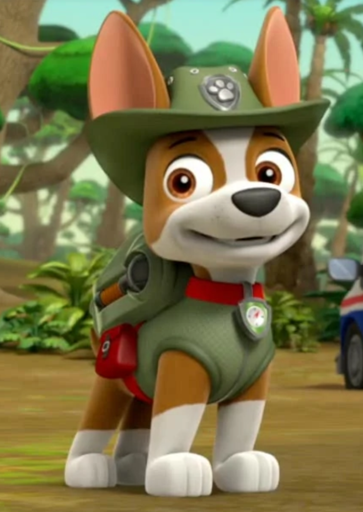
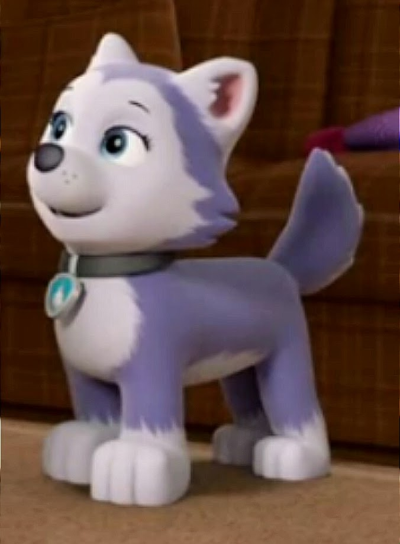

Hi! We are Paw Patrol!
Having any problems just yell for help!
 Ryder is the leader of PAW Patrol. He is 10 years old. He was voiced by Owen Mason[5] from Season 1 to Mid-Season 2, by Elijha Hammill from Mid-Season 2 to Late Season 3, Jaxon Mercey from Late Season 3 to Mid-Season 6, Joey Nijem from Mid-Season 6 to Late-Season 7 and by Beckett Hipkiss from Late-Season 7 onwards, as well as Will Brisbin in PAW Patrol: The Movie.[6]
 s

s

Marshall is a clumsy but competent Dalmatian who serves as a firefighter and paramedic dog. He is also featured in most episodes and is the most used pup. His vehicle is the fire truck. He was voiced by Gage Munroe from Season 1, by Drew Davis from Season 2 to Season 5, by Lukas Engel from Season 6 and by Kingsley Marshall from Late-Season 6 onwards.

Zuma is a chocolate Labrador retriever who serves as an aquatic rescue pup. His vehicle is the orange-coloured hovercraft which can run on land as well as water. He was voiced by Alex Thorne from Season 1 to Mid-Season 4, Carter Thorne from Mid-Season 4 to Season 5 and by Shayle Simons from Season 6 onwards.

Rocky is a grey-and-white Schnauzer/Scottish Terrier mixed-breed pup who serves as a recycling and handyman pup. He drives the recycle truck. He was voiced by Stuart Ralston from Season 1 to Season 2, by Samuel Faraci from Season 3 to Mid-Season 7 and by Jackson Reid from Late-Season 7 onwards, as well as Callum Shoniker in PAW Patrol: The Movie.

Rubble is a bulldog who serves as a construction pup. His vehicle is the bulldozer. He was voiced by Devan Cohen from Season 1 to Season 5 and by Keegan Hedley from Season 6 onwards.

Skye is a cockapoo who serves as the air pup. She has a helicopter. She was voiced by Kallan Holley from Season 1 to Season 5 and by Lilly Bartlam from Season 6 onwards.

Tuck and Ella are two Golden Retriever siblings who are known as the Mighty Twins. They were introduced in the season six episode, "Mighty Pups, Super Paws: Pups Meet the Mighty Twins". Their vehicle is a "Mighty Car" that splits into two "Mighty Motorcycles". They are voiced by Eamon Hanson and Isabella Leo.

Tracker is a brown-and-white Chihuahua who serves as a jungle rescue pup. He was introduced in the season three episode, "Tracker Joins the Pups". His vehicle is a Jeep, and he is bilingual, speaking both Spanish and English. He is voiced by David Lopez.

Everest is a Siberian Husky who serves as a snow rescue pup in emergencies relating to snow or ice. She was introduced in the episode of season 2 "The New Pup". Her vehicle is a snowmobile. She is voiced by Berkley Silverman. Everest, along with Cap'n Turbot, was added to the opening theme in season three.